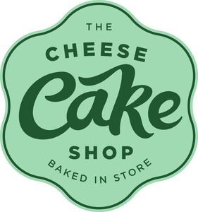

Trade Mark Journal No.2025/046 14 November 2025
WO0000001837979 (29,30,32,35,43)
Office of origin: Australia
Date of International Registration:2 December 2024
Date of designation in the UK:
2 December 2024

- Class 29
- Cream cheese; fruit compotes; prepared desserts (fruit based); fruit desserts; cream desserts; desserts made wholly or principally of dairy products; mixtures of fruit and nuts; cream (dairy products).
- Class 30
- Cheesecakes; tortes; bakery products; flour; fruit filled pastry products; pastries containing creams and fruit; pastries containing creams; prepared desserts (pastries); cookies; meringue; beverages consisting principally of chocolate; coffee; tea; aerated beverages (with coffee, cocoa or chocolate base); cocoa; sugar; caramel; creme caramels; chocolate fudge; fudge; gateaux; chocolate creams; cake flour; cake batter; cake dough; cake frosting (icing); mixtures for making cakes; cake preparations; edible cake decorations; sponge cakes; tea cakes; cream cakes; cake decorations made of candy; cakes; candy decorations for cakes; chocolate covered cakes; chocolate cake; frozen cakes; mixes for making cakes; panna cotta cakes; semifreddo gelato cakes; treacle cake; desserts in the form of puddings with a milk base.
- Class 32
- Aerated drinks (non-alcoholic); beverages made from fruit concentrates; carbonated non-alcoholic drinks; mineral water (beverages); aerated waters.
- Class 35
- Business management of a retail enterprise for others; online retail services connected with the sale of non-alcoholic beverages; retail services connected with the sale of non-alcoholic beverages; wholesale services connected with the sale of non-alcoholic beverages; business advice relating to advertising; business advice relating to marketing; business management advice; provision of business advice relating to franchising; administration of the business affairs of franchises; business assistance relating to franchising; business assistance relating to the establishment of franchises; business consultancy relating to franchising; business advertising services relating to franchising; business advisory services relating to the establishment of franchises; business advisory services relating to the operation of franchises; business franchising consultancy and administrative business support services; business management services relating to franchising; provision of assistance (business) in the establishment of franchises; provision of assistance (business) in the operation of franchises; provision of business information relating to franchising; business consultancy services relating to insolvency.
- Class 43
- Decorating of food; consultancy services relating to food preparation; food preparation; preparation of take-away and fast food; takeaway food and drink services; preparation of food and drink; food and drink catering; providing food and drink; provision of food and drink.
R & W Traders Pty Ltd
Representative: Sheridans Solicitors LLP, 76 Wardour Street London W1F 0UR UNITED KINGDOM